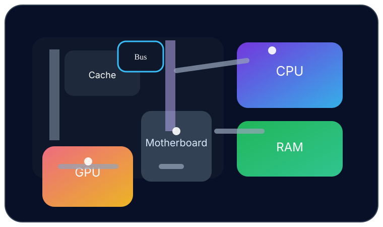
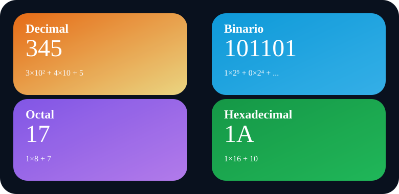
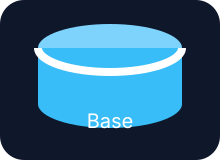
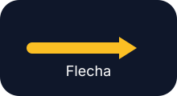

Johana Laica
Soy de la ciudad de Salcedo, tengo 20 años, me gusta jugar fútbol y estudio Ingeniería en Software.
Unidad 1
⭐⭐⭐
Unidad 2
⭐⭐⭐
Unidad 3
⭐

Perfil
Estudiante de Ingeniería
Apasionada por la tecnología, la programación y el diseño visual.
Johana Laica - Ingeniería en software
Diseño creativo con glassmorphism, animaciones suaves y secciones completas para cada tema.
Arquitectura del Computador
Explora la estructura interna del computador, sus componentes, los sistemas operativos y los sistemas de numeración con ejemplos prácticos.
Arquitectura del computador
Componentes principales y su función dentro del sistema.

La arquitectura del computador describe cómo los componentes internos trabajan juntos para procesar información. Incluye CPU, memoria RAM, placa madre, unidades de almacenamiento, tarjetas de expansión y buses de datos.
Esta estructura permite ejecutar instrucciones, administrar memoria y comunicarse con dispositivos externos.
Componentes clave
Unidad central de procesamiento que interpreta instrucciones y realiza cálculos.
Almacena datos temporales y programas en ejecución para acceso rápido.
Conecta todos los componentes y distribuye energía y señales de datos.
HDD y SSD guardan datos de forma permanente y permiten cargas rápidas.
Windows, Linux, macOS, Android e iOS
Cada sistema operativo administra recursos, presenta una interfaz y ofrece herramientas únicas para usuarios y desarrolladores.
Windows
Desarrollado por Microsoft, Windows es un sistema operativo de escritorio conocido por su compatibilidad con multitud de aplicaciones y juegos.
Presenta una interfaz gráfica intuitiva, soporte para periféricos y actualizaciones constantes.
Linux
Linux es un kernel abierto que alimenta múltiples distribuciones. Es famoso por su estabilidad, seguridad y flexibilidad.
Se usa en servidores, desarrollo, educación y dispositivos embebidos.
macOS
macOS es el sistema operativo de Apple para computadoras Mac. Ofrece integración nativa con hardware Apple y una experiencia visual pulida.
Destaca en diseño, creación de contenido y ambientes creativos.
Android
Android es un sistema móvil abierto basado en Linux. Es utilizado por cientos de marcas y ofrece gran personalización y acceso a millones de apps.
Se utiliza en teléfonos, tablets y dispositivos conectados.
iOS
iOS es el sistema móvil exclusivo de Apple. Está optimizado para rendimiento, seguridad y una experiencia de usuario uniforme.
Se destaca por su ecosistema cerrado y actualizaciones rápidas.
Decimal, Binario, Octal y Hexadecimal
Los sistemas de numeración son esenciales para comprender cómo los computadores representan y procesan información.

El sistema decimal usa base 10, el binario usa base 2, el octal usa base 8 y el hexadecimal usa base 16.
Cada uno es útil para contextos particulares: el decimal para humanos, el binario para electrónica digital, el octal para agrupación de bits y el hexadecimal para direcciones de memoria.
Decimal
Base 10, dígitos del 0 al 9. Muy usado en la vida diaria y en cálculos comunes.
Ejemplo: 345 = 3×10² + 4×10 + 5.
Binario
Base 2, solo 0 y 1. Es el lenguaje nativo de los circuitos digitales.
Ejemplo: 1101₂ = 1×2³ + 1×2² + 0×2¹ + 1×2⁰ = 13.
Octal
Base 8, dígitos 0 a 7. Agrupa tres bits para una representación más compacta.
Ejemplo: 17₈ = 1×8 + 7 = 15 decimal.
Hexadecimal
Base 16, dígitos 0-9 y A-F. Representa cuatro bits por dígito.
Ejemplo: 1A₁₆ = 1×16 + 10 = 26 decimal.
Algoritmos y Diagramas de Flujo
Aprende por qué los algoritmos son el corazón de la informática y cómo se representan con diagramas de flujo y pseudocódigo.
Qué es un algoritmo
Un algoritmo es una serie de pasos ordenados que resuelven un problema o realizan una tarea concreta de forma lógica y finita.
Importancia
Son fundamentales para programar, automatizar procesos, optimizar recursos y garantizar resultados repetibles.
Características
Deben ser claros, finitos, efectivos, precisos y deteministas.
Ventajas
Permiten resolver problemas complejos paso a paso, reducen errores y mejoran el mantenimiento del software.
Aplicaciones
Se usan en búsqueda, ordenación, inteligencia artificial, redes, seguridad y todos los programas informáticos.
Ejemplos
Un algoritmo puede ser una receta de cocina, los pasos para iniciar una computadora o un plan para pagar en un supermercado.
Algoritmos de la vida real
Comprender algoritmos con ejemplos cotidianos ayuda a internalizar cómo una solución se divide en pasos claros.
Preparar café
Objetivo: Obtener una taza lista para beber.
Pasos: Hervir agua, agregar café, verter y servir.
Lavarse las manos
Objetivo: Mantener higiene personal.
Pasos: Mojar, enjabonarse, frotar, enjuagar y secar.
Cocinar arroz
Objetivo: Preparar arroz cocido y suave.
Pasos: Lavar arroz, medir agua, hervir, cocer y reposar.
Cruzar la calle
Objetivo: Llegar al otro lado con seguridad.
Pasos: Observar, esperar semáforo, cruzar y revisar el entorno.
Encender una computadora
Objetivo: Iniciar un equipo de forma correcta.
Pasos: Presionar encendido, escuchar arranque, ingresar contraseña y abrir programas.
Comprar en supermercado
Objetivo: Adquirir productos necesarios de forma eficiente.
Pasos: Hacer lista, elegir productos, pagar y revisar recibo.
Enviar un mensaje
Objetivo: Comunicarse con otra persona.
Pasos: Abrir app, seleccionar contacto, escribir y enviar.
Retirar dinero
Objetivo: Obtener efectivo de un cajero.
Pasos: Insertar tarjeta, elegir monto, confirmar y retirar efectivo.
Diagramas de Flujo (DFD)
Los diagramas de flujo representan visualmente las decisiones y operaciones de un algoritmo con símbolos estandarizados.
Qué es un DFD
Es una representación gráfica de un algoritmo, donde cada símbolo muestra un paso, una decisión, entrada/salida o un proceso.
Importancia
Facilitan la comprensión del flujo de trabajo y ayudan a detectar errores antes de programar.
Características
Usan símbolos estándar, conectores claros y muestran rutas alternativas según condiciones.
Ventajas
Mejoran la comunicación, simplifican el diseño y permiten planificar soluciones antes de codificar.
Desventajas
Si son muy detallados pueden volverse complejos y difíciles de mantener.
Uso práctico
Se emplean en análisis de procesos, presentación de algoritmos y diseño de sistemas.


Inicio
Marca el punto de entrada del algoritmo.
Fin
Indica la terminación del proceso.

Proceso
Representa una operación o cálculo que se ejecuta.

Entrada / Salida
Indica datos que entran o salen del sistema.

Decisión
Representa una condición con caminos alternativos.
Documento
Simboliza un registro o informe generado por el proceso.

Base de datos
Muestra almacenamiento donde se guarda información estructurada.
Conector
Une diferentes partes del diagrama y conserva claridad.

Flecha
Indica la dirección del flujo entre símbolos.
Ejercicios resueltos
Ejemplos que muestran algoritmos desde la idea hasta el código.
Par o impar
Leer n Si n % 2 = 0 Entonces Escribir "par" Sino Escribir "impar" FinSi
Compra en supermercado
Hacer lista Ir al supermercado Seleccionar productos Pagar y salir
Retirar dinero
Insertar tarjeta Elegir monto Confirmar Retirar efectivo
Enviar mensaje
Seleccionar contacto Escribir mensaje Presionar enviar Esperar confirmación
Pseudocódigo
El pseudocódigo describe algoritmos con lenguaje natural estructurado antes de programar.
Qué es
Es una representación semiestructurada de un algoritmo que usa palabras clave similares a un lenguaje de programación, pero sin sintaxis estricta.
Importancia
Facilita la planificación y el diálogo entre equipo de desarrollo, diseño y usuarios antes de escribir código.
Características
Es fácil de leer, secuencial y no depende de un lenguaje específico.
Ventajas
Ayuda a estructurar ideas, reduce errores de lógica y acelera el desarrollo.
Desventajas
No se ejecuta directamente y requiere traducción a un lenguaje real.
Estructuras
Puede representar algoritmos de forma secuencial, condicional y repetitiva.
Secuencial
Leer base Leer altura area = base * altura Escribir area
Condicional
Si nota >= 70 Entonces Escribir "Aprobado" Sino Escribir "Reprobado" FinSi
Repetitiva
i = 1 Mientras i <= 5 Hacer Escribir i i = i + 1 FinMientras
Python y Mapas de Karnaugh
En esta unidad verás Python desde lo básico hasta estructuras avanzadas, además de mapas de Karnaugh para lógica booleana.

Introducción a Python
Es un lenguaje interpretado, legible y con una sintaxis simple. Funciona en múltiples plataformas y es muy usado en educación y desarrollo.
Historia
Creado por Guido van Rossum en 1991, Python fue diseñado para ser claro, fácil de aprender y expandible.
Características
Tipado dinámico, sintaxis legible, bibliotecas amplias y soporte para paradigmas orientado a objetos y funcional.
Ventajas
Es ideal para prototipos rápidos, automatización y análisis de datos.
Desventajas
Puede ser más lento que lenguajes compilados y consumir más memoria.
Aplicaciones
Desarrollo web, ciencia de datos, IA, automatización, scripts y aplicaciones de escritorio.
Variables y Tipos de datos
En Python, las variables almacenan información y los tipos de datos definen el comportamiento de esa información.
Variables
Son etiquetas que almacenan valores. Se pueden reasignar en cualquier momento.
nombre = 'Johana' edad = 20 activo = True
int
Enteros sin parte decimal.
a = 10 b = -5
float
Números con decimales.
precio = 5.75 altura = 1.65
str
Texto encerrado entre comillas.
saludo = 'Hola' usuario = "Johana"
bool
Valores de verdad: True o False.
activo = True valido = False
list
Colección ordenada y mutable de elementos.
colores = ['rojo', 'azul', 'verde']
tuple
Colección ordenada e inmutable.
punto = (10, 20)
dictionary
Colección de pares clave-valor.
persona = {'nombre': 'Johana', 'edad': 20}
set
Conjunto de valores únicos sin orden específico.
colores = {'rojo', 'azul', 'verde'}
Operadores
Permiten operaciones aritméticas, comparaciones y lógica.
Aritméticos: +, -, *, /, %, **
Relacionales: ==, !=, >, <, >=, <=
Lógicos: and, or, not
Entrada y salida
nombre = input('Nombre: ')
print('Hola', nombre)
Condicionales
if edad >= 18:
print('Mayor de edad')
elif edad >= 13:
print('Adolescente')
else:
print('Niño')
Ciclos
for i in range(5): print(i) while i < 5: i += 1
Funciones
def saludar(nombre):
return f'Hola {nombre}'
print(saludar('Johana'))
Listas
Permiten almacenar múltiples valores modificables.
frutas = ['manzana', 'banana']
frutas.append('uva')
Tuplas
Son similares a las listas, pero inmutables.
coordenada = (10, 20)
Diccionarios
Guardan datos con claves únicas.
persona = {'nombre': 'Johana', 'edad': 20}
Mapas de Karnaugh
Los mapas de Karnaugh simplifican funciones booleanas de forma visual y ayudan a diseñar circuitos más eficientes.

2 variables
Permite agrupar combinaciones adyacentes para simplificar expresiones simples.

3 variables
Organiza ocho combinaciones y reduce expresiones con tres variables.

4 variables
Ofrece una vista eficiente para simplificar funciones con cuatro variables.

Ejercicio 1
Simplificar la función F = Σ(0,1,2,5).
Mapa de 2 variables y agrupación de celdas adyacentes. Resultado: F = A' + B
Ejercicio 2
Simplificar la función F = Σ(0,2,3,5,7).
Usar mapa de 3 variables, agrupar en pares. Resultado: F = A'B + BC.
Ejercicios de Python
Práctica con código real para afianzar cada concepto de Python.
Suma de dos valores
a = int(input('a: '))
b = int(input('b: '))
print(a + b)
Convertir grados
C = float(input('Celsius: '))
F = C * 9/5 + 32
print('Fahrenheit:', F)
Verificar palabra
texto = input('Texto: ')
if 'hola' in texto.lower():
print('Contiene hola')
else:
print('No contiene')
Bucle while
n = int(input('n: '))
i = 1
suma = 0
while i <= n:
suma += i
i += 1
print(suma)